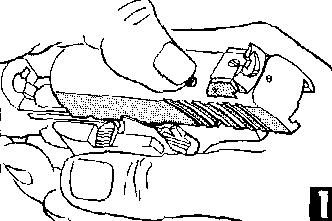

Check the magazine and chamber to be sure the gun is empty. Pull the slide back as far as it will go. Press down the assembly lock plunger (K), depress the slide stop (RR), and push the slide closed by hand, since the recoil spring is locked and cannot return the slide.